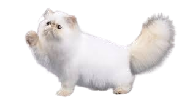

Kucing (Felis catus) adalah hewan mamalia karnivora kecil yang telah lama menjadi hewan peliharaan manusia. Dengan tubuh yang lincah, bulu lembut, serta mata tajam yang bisa bersinar di kegelapan, kucing adalah pemburu alami yang mahir menangkap tikus dan serangga. Mereka memiliki perilaku mandiri tetapi juga bisa menunjukkan kasih sayang kepada pemiliknya. Kucing dikenal dengan kebiasaannya menjilati tubuh untuk menjaga kebersihan serta sifatnya yang suka tidur hingga 12-16 jam sehari. Ada banyak ras kucing dengan berbagai warna dan pola bulu, dari yang berbulu pendek hingga panjang. Selain sebagai teman manusia, kucing juga sering dikaitkan dengan berbagai mitos dan budaya di berbagai belahan dunia.
Kucing Sphynx adalah ras kucing unik yang dikenal karena tubuhnya yang hampir tidak berbulu, meskipun sebenarnya memiliki lapisan tipis seperti beludru. Kucing ini memiliki kulit berkerut, telinga besar, dan mata yang tajam, memberikan penampilan eksotis dan elegan. Karena tidak memiliki bulu tebal, Sphynx sangat sensitif terhadap suhu dingin dan membutuhkan perawatan khusus, seperti mandi rutin untuk menghilangkan minyak berlebih di kulitnya. Meskipun tampilannya mungkin terlihat berbeda, Sphynx adalah kucing yang ramah, penuh energi, dan sangat menyukai perhatian dari manusia. Mereka dikenal sebagai kucing yang suka bermain, aktif, serta sering mencari kehangatan dengan berpelukan dengan pemiliknya atau berbaring di tempat yang hangat.
Kucing Persia adalah salah satu ras kucing paling populer dan dikenal karena bulunya yang panjang, wajah bulat, serta hidung pesek yang khas. Mereka memiliki sifat yang tenang, manja, dan penyayang, menjadikannya pilihan favorit sebagai hewan peliharaan. Kucing Persia membutuhkan perawatan ekstra, terutama dalam hal perawatan bulu yang harus disisir secara rutin agar tidak kusut dan mencegah hairball. Ras ini juga cenderung kurang aktif dibandingkan kucing lain, lebih suka bersantai di tempat yang nyaman. Kucing Persia memiliki berbagai variasi, seperti Persia Himalaya (hasil persilangan dengan kucing Siam), Persia Peaknose (berhidung lebih pesek), dan Persia Flatnose (berhidung lebih rata). Karena sifatnya yang lembut dan wajahnya yang menggemaskan, kucing Persia sangat disukai oleh pecinta kucing di seluruh dunia.

Kucing Devon Rex adalah ras kucing unik yang dikenal karena bulunya yang sangat pendek, keriting, dan halus seperti beludru. Mereka memiliki tubuh ramping, telinga besar, serta mata lebar yang memberikan ekspresi ceria dan nakal. Devon Rex terkenal sebagai kucing yang aktif, cerdas, dan penuh rasa ingin tahu, sering kali bertingkah laku seperti "kucing anjing" karena suka mengikuti pemiliknya ke mana pun. Mereka juga senang melompat ke tempat tinggi dan suka mencari perhatian serta kasih sayang. Karena bulunya yang tipis, Devon Rex lebih sensitif terhadap suhu dingin dan perlu kehangatan ekstra. Ras ini cocok untuk keluarga yang menginginkan kucing yang energik, penyayang, dan suka bermain.